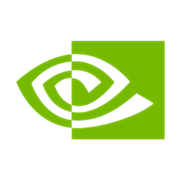

Driver currentGeForce RTX 3070
8 GB GDDR6 · PCIe 4.0 x16 · 1440p 240 Hz display
Profile
Low Latency
HDR games
Auto per title
Exo Shaders
Ready
Review what Exo can tune for your RTX 3070, Ryzen 5 5600X, and NVMe drive. Every change is reversible in the PC room.

Driver current